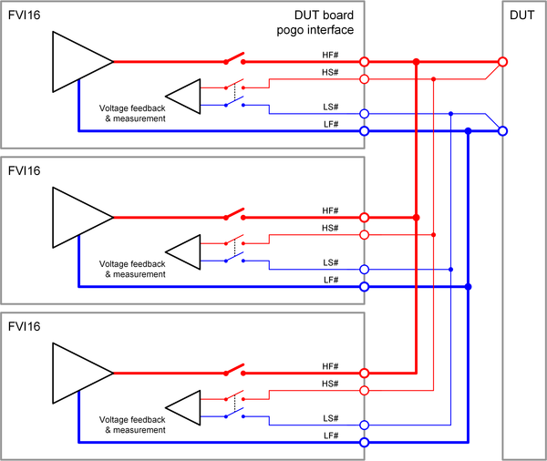

FVI16 ganged wiring
In order to achieve a higher output current, parallel connection of multiple FVI16 channels is supported. This is called "ganging". Software controlled channel ganging is supported for any channel combination and for up to sixteen channels within an FVI16 card.
Some design rules must be considered for ganging FVI16 channels:
- The pogo pins HF#, LF#, HS# and LS# of the ganged channels must be connected together on the DUT board.
- The available power budget and energy budget on FVI16 cards is defined as follows:
- The maximum total power budget is 400 W.
- The maximum total energy budget is 3.2 J1).
- The two budgets are equally distributed to two channel groups 1 … 8 and 9 … 16 providing 200 W and 1.6 J per group.
- Within the two groups, the budgets are shared by all eight channels.
- The force lines from the pogo pins of the individual channels to the point where the force lines are connected together should have the same path resistance. This should harmonize the dynamic behavior of the ganged channels.
- The connection from sense lines to the force lines should be made directly at the DUT to ensure a sufficient voltage regulation and measurement.
HF# and LF#
The HF (High force) pogo pins and the LF (Low force) pogo pins of the ganged channels must be connected together on the DUT board as shown in the diagram below. The DUT board layout must consider the maximum combined current of the ganged channels.
HS# and LS#
The HS (High sense) pogo pins and the LS (Low sense) pogo pins of the ganged channels must be connected together on the DUT board as shown in the diagram below.
Example

The diagram above shows an example for ganging of three channels. The channel outputs HF#, HS#, LF# and LS# are connected together at the DUT. The connection from the sense lines to the force lines is directly made at the DUT to ensure a sufficient voltage regulation or voltage measurement.
Functional changes
- Introduced in SmarTest 7.5.0